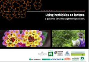
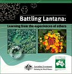
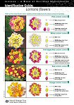
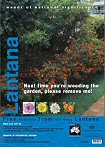

|
African boxthorn
| alligator weed
| asparagus weeds
| athel pine
| bellyache bush
| bitou bush/boneseed
| blackberry
| brooms
| cabomba
| cat's claw creeper
| Chilean needle grass
| fireweed
| gamba grass
| gorse
| hymenachne
| lantana
| madeira vine
| mesquite
| mimosa
| opuntioid cacti
| Parkinsonia
| parthenium weed
| pond apple
| prickly acacia
| rubber vine
| sagittaria
| salvinia
| serrated tussock
| silverleaf nightshade
| water hyacinth
| willows

Documents and Resources
Unless otherwise stated, all resources are available in hard copy and free of charge. To order, contact the Qld Department of Agriculture Fisheries and Forestry on 13 25 23 (from within Qld) or +61 7 3404 6999 from interstate or overseas.
Lantana Best Practice Manual and Decision Support Tool
Using Herbicides on Lantana (available by download only)
| This publication includes a comprehensive outline of the available herbicides and application methods; and details the most effective time of year and rates at which each should be applied.
|
Battling Lantana: learning from the experiences of others (DVD)
This DVD provides a comprehensive overview of the management strategies and key issues that must be considered when controlling lantana in production and environmental systems.
Information has been drawn from interviews with land managers with extensive experience in lantana management. |
Fact Sheets – Lantana camara
| These fact sheets, produced by Biosecurity Queensland, the New South Wales Department of Primary Industries and the Weeds CRC, provide an introduction to lantana, its impacts and control methods. |
Flower Guide (available by download only)
| This publication explains the distinguishing features of lantana plants and is particularly useful for people who are unfamiliar with plant taxonomy. It explains how to differentiate between ornamental and weedy varieties, and between the L. camara and L. montevidensis species.
|
Lantana Poisoning Brochure
| This brochure details the toxic nature of lantana, its effects on livestock and how to recognise the symptoms of lantana poisoning. It provides some basic guidelines on treatment but it is strongly advised that you contact a vet as soon as you suspect poisoning has occurred. |
Biological Control Fact Sheets
| These sheets describe each of the lantana biological control agents, detailing their history, control ability and preferred climates. |
|
|
Promotional Posters
| These posters promote removal of lantana and draw attention to its capacity for environmental and economic destruction.
|
Free Australia from Lantana Brochure
Surveys and Reports (available by download only)
Information Sheets (available by download only)
Lantana Lowdown archive
 SITE MAP SITE MAP

| |
| | |
|
|